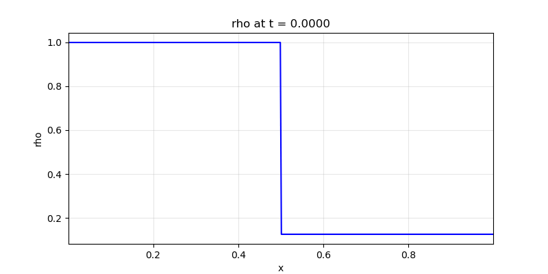
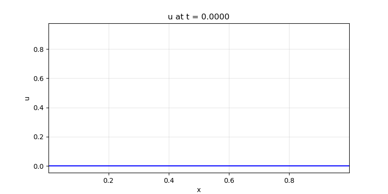
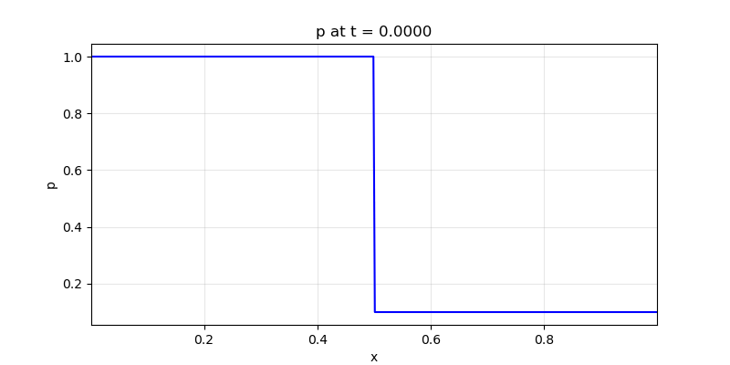
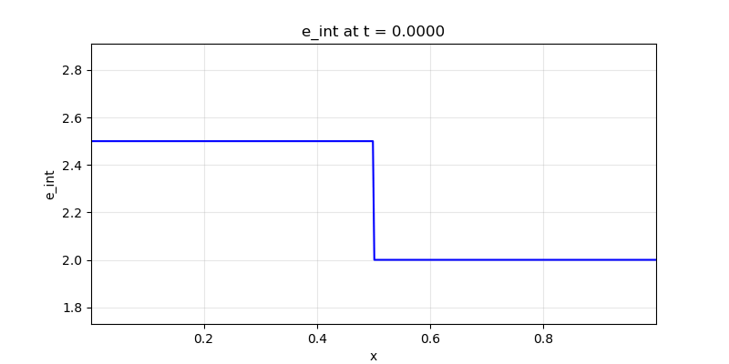
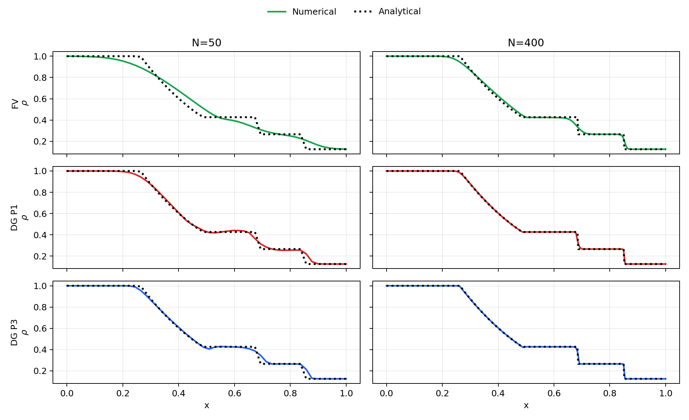
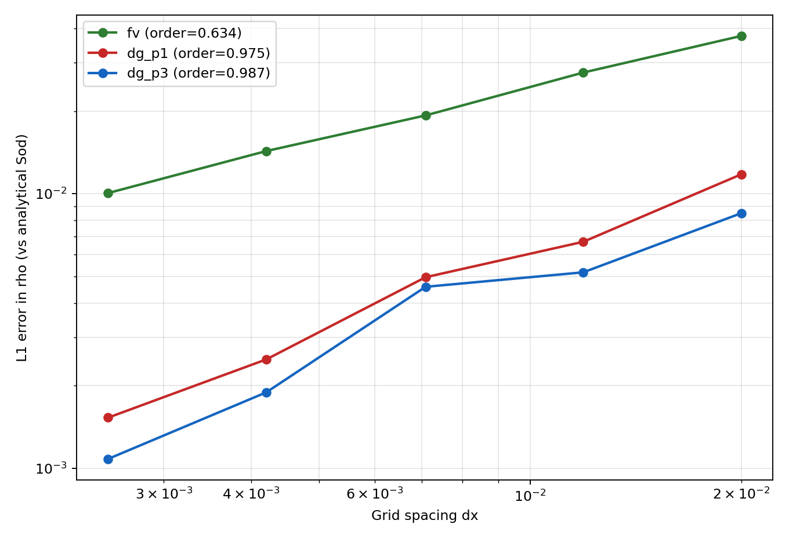

sod_shock_tube_1d
Description
Classic 1D Sod shock tube (Riemann problem) for validating compressible Euler solvers. Single-phase ideal gas (γ=1.4). At t=0.2: left-moving rarefaction, contact discontinuity, right-moving shock. This test now includes FV and DG (P1/P2/P3) comparisons and analytical-reference convergence outputs.
How to run
python run.py unit_tests/sod_shock_tube_1d.yaml
python run.py unit_tests/sod_shock_tube_convergence_1d.yamlConfig summary
- Domain: x ∈ [0, 1], 400 points
- Time: dt = 0.0001, 2000 steps (t_final = 0.2)
- Physics: euler mode, ideal gas (γ=1.4, p_∞=0); FV and DG discretizations available
- IC: Riemann at x=0.5 — Left: ρ=1, u=0, p=1; Right: ρ=0.125, u=0, p=0.1
- BC: transmissive; Reconstruction: first-order (use_muscl: false) for FV baseline
- Monitors: console, gif (rho, u, p, E, e_int), txt
Output
Animated GIFs for density, velocity, pressure, total energy, and specific internal energy.
Density (ρ)

Velocity (u)

Pressure (p)

Total energy (E)

Specific internal energy (e_int)

New FV/DG Figure Set
Method-by-resolution comparison with analytical Sod density

L1 convergence in density vs analytical Sod reference
